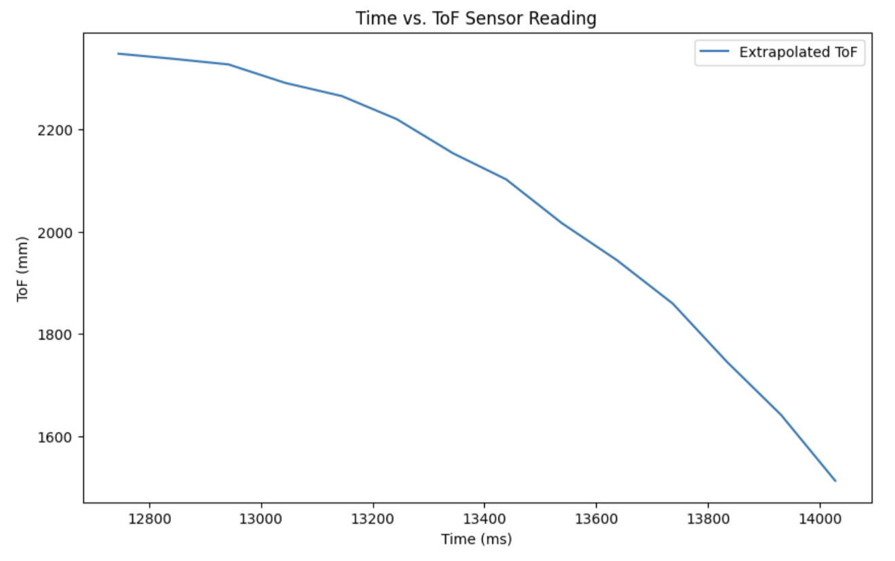
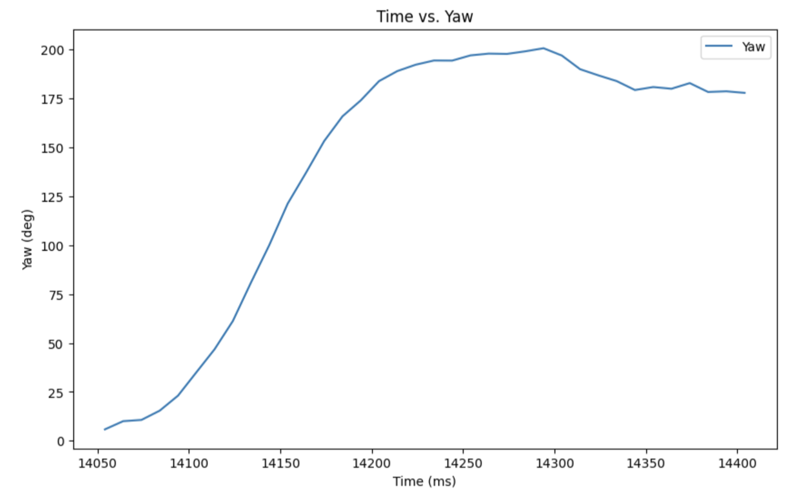
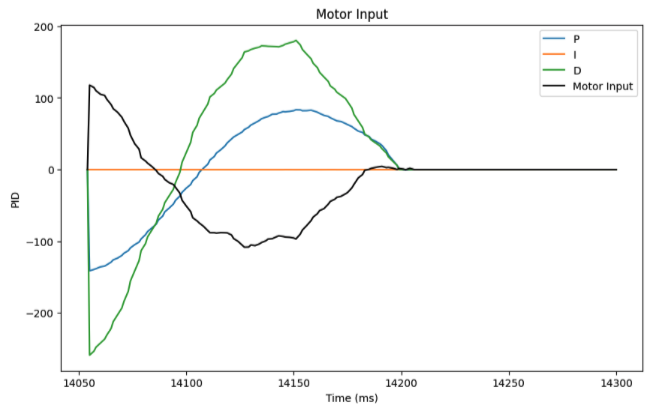

Lab 8: Stunts
Drift
I chose to perform a drift, since I did not want to risk breaking the robot at this point. Update: haha guess what, it broke and I had to resolder a motor driver.
Similar to previous labs, I created 3 commands: one for tuning values, one for starting the stunt, and one for sending the data.
The command CHAGE_DRIFT_VAL adjusts gain values as well as the turning point of the robot relative to the wall.
The command START_DRIFT sets the goal angle to 180˚ and initiates the stunt by setting the flag DRIFT_ON to true.
The command SEND_DRIFT_DATA sends time, distance measured by the TOF sensor, and yaw for plotting.
Below is the code snippet inside my main loop for when DRIFT_ON is true.
The logic consists of three states. First, the robot drives forward until the TOF sensor records a value less than 1400 mm (turnat in snippet, can be changed using bluetooth command), then turns on orientation PID.
Next, once the 180˚ turn is achieved, the end time of the turn is recorded. Last, it drives forward for another 1.5 seconds after the turn until it comes to a stop.
The 1400 mm threshold was found experimentally. To speed up the stunt, I chose to initiate the turn while the robot is still skidding, rather than making the robot come to a complete stop before starting the turn. So, instead of braking the robot at the 3 ft mark, I decided to stop the motors earlier to allow the wheels to slide. This way, the robot could complete the turn within 3 ft of the wall without crashing into it, and 1400 mm proved to be an effective distance for that purpose.
The first video is my best attempt at executing the stunt, with Kp = 0.8, Ki = 0.01, Kd = 0.04, and the following two are some other valid attempts. I couldn't get the robot to not overshoot :(
Below are ToF sensor and PID input plots for the stunt in the first video. I stopped recording ToF distance values once it starts orientation PID so the plot show the exact distance of robot the robot from the wall before turning, but it can be seen visually in the video that it is less than 1 ft from the robot skidding. Similarly, I only recorded PID values during turning because I didn't use linear PID for driving the robot forward, therefore the 0s at the end of the plot.
  The robot was having trouble correcting its position because of friction. The left motors were a bit weaker despite the calibration, so I taped the left wheels to reduce grip and help balance out the turning, which worked pretty well!
Code for PID_ANGLE_ON can be found in the appendix in Lab 6: Orientation PID.
I had a lot of trouble with the wrap around error, so I implemented the logic below to add (or subtract) 360 to the yaw value recorded if the magnitude of the difference between two consecutive measurements bigger than 180.
Blooper
Sound on!
References and Acknowledgements
- Jeffery Cai for helping me as always
- Ben Liao for helping me as always
- SPECIAL THANKS TO THE $1 BILLION FUNDING CUT FOR MAKING ME TAKE AN EXTENSION ON THIS LAB :(
- Bootstrap template for website